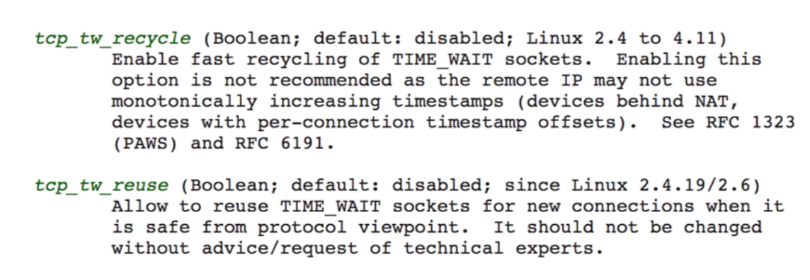

- 000 开篇词 洞悉技术的本质，享受科技的乐趣.md.html
- 001 程序员如何用技术变现（上）.md.html
- 002 程序员如何用技术变现（下）.md.html
- 003 Equifax信息泄露始末.md.html
- 004 从Equifax信息泄露看数据安全.md.html
- 005 何为技术领导力.md.html
- 006 如何拥有技术领导力.md.html
- 007 推荐阅读：每个程序员都该知道的事.md.html
- 008 Go语言，Docker和新技术.md.html
- 009 答疑解惑：渴望、热情和选择.md.html
- 010 如何成为一个大家愿意追随的Leader？.md.html
- 011 程序中的错误处理：错误返回码和异常捕捉.md.html
- 012 程序中的错误处理：异步编程和最佳实践.md.html
- 013 魔数 0x5f3759df.md.html
- 014 推荐阅读：机器学习101.md.html
- 015 时间管理：同扭曲时间的事儿抗争.md.html
- 016 时间管理：投资赚取时间.md.html
- 017 故障处理最佳实践：应对故障.md.html
- 018 故障处理最佳实践：故障改进.md.html
- 019 答疑解惑：我们应该能够识别的表象和本质.md.html
- 020 分布式系统架构的冰与火.md.html
- 021 从亚马逊的实践，谈分布式系统的难点.md.html
- 022 分布式系统的技术栈.md.html
- 023 分布式系统关键技术：全栈监控.md.html
- 024 分布式系统关键技术：服务调度.md.html
- 025 分布式系统关键技术：流量与数据调度.md.html
- 026 洞悉PaaS平台的本质.md.html
- 027 推荐阅读：分布式系统架构经典资料.md.html
- 028 编程范式游记（1）- 起源.md.html
- 029 编程范式游记（2）- 泛型编程.md.html
- 030 编程范式游记（3） - 类型系统和泛型的本质.md.html
- 031 Git协同工作流，你该怎样选.md.html
- 032 推荐阅读：分布式数据调度相关论文.md.html
- 033 编程范式游记（4）- 函数式编程.md.html
- 034 编程范式游记（5）- 修饰器模式.md.html
- 035 编程范式游记（6）- 面向对象编程.md.html
- 036 编程范式游记（7）- 基于原型的编程范式.md.html
- 037 编程范式游记（8）- Go 语言的委托模式.md.html
- 038 编程范式游记（9）- 编程的本质.md.html
- 039 编程范式游记（10）- 逻辑编程范式.md.html
- 040 编程范式游记（11）- 程序世界里的编程范式.md.html
- 041 弹力设计篇之“认识故障和弹力设计”.md.html
- 042 弹力设计篇之“隔离设计”.md.html
- 043 弹力设计篇之“异步通讯设计”.md.html
- 044 弹力设计篇之“幂等性设计”.md.html
- 045 弹力设计篇之“服务的状态”.md.html
- 046 弹力设计篇之“补偿事务”.md.html
- 047 弹力设计篇之“重试设计”.md.html
- 048 弹力设计篇之“熔断设计”.md.html
- 049 弹力设计篇之“限流设计”.md.html
- 050 弹力设计篇之“降级设计”.md.html
- 051 弹力设计篇之“弹力设计总结”.md.html
- 052 区块链技术 - 区块链的革命性及技术概要.md.html
- 053 区块链技术 - 区块链技术细节 - 哈希算法.md.html
- 054 区块链技术 - 区块链技术细节 - 加密和挖矿.md.html
- 055 区块链技术 - 去中心化的共识机制.md.html
- 056 区块链技术 - 智能合约.md.html
- 057 区块链技术 - 传统金融和虚拟货币.md.html
- 058 管理设计篇之分布式锁.md.html
- 059 管理设计篇之配置中心.md.html
- 060 管理设计篇之边车模式.md.html
- 061 管理设计篇之服务网格.md.html
- 062 管理设计篇之网关模式.md.html
- 063 管理设计篇之部署升级策略.md.html
- 064 性能设计篇之缓存.md.html
- 065 性能设计篇之异步处理.md.html
- 066 性能设计篇之数据库扩展.md.html
- 067 性能设计篇之秒杀.md.html
- 068 性能设计篇之边缘计算.md.html
- 069 程序员练级攻略（2018）：开篇词.md.html
- 070 程序员练级攻略（2018）：零基础启蒙.md.html
- 071 程序员练级攻略（2018）：正式入门.md.html
- 072 程序员练级攻略（2018）：程序员修养.md.html
- 073 程序员练级攻略（2018）：编程语言.md.html
- 074 程序员练级攻略：理论学科.md.html
- 075 程序员练级攻略（2018）：系统知识.md.html
- 076 程序员练级攻略（2018）：软件设计.md.html
- 077 程序员练级攻略（2018）：Linux系统、内存和网络.md.html
- 078 程序员练级攻略（2018）：异步IO模型和Lock-Free编程.md.html
- 079 程序员练级攻略（2018）：Java底层知识.md.html
- 080 程序员练级攻略（2018）：数据库.md.html
- 081 程序员练级攻略（2018）：分布式架构入门.md.html
- 082 程序员练级攻略（2018）：分布式架构经典图书和论文.md.html
- 083 程序员练级攻略（2018）：分布式架构工程设计.md.html
- 084 程序员练级攻略（2018）：微服务.md.html
- 085 程序员练级攻略（2018）：容器化和自动化运维.md.html
- 086 程序员练级攻略（2018）：机器学习和人工智能.md.html
- 087 程序员练级攻略（2018）：前端基础和底层原理.md.html
- 088 程序员练级攻略（2018）：前端性能优化和框架.md.html
- 089 程序员练级攻略（2018）：UIUX设计.md.html
- 090 程序员练级攻略（2018）：技术资源集散地.md.html
- 091 程序员面试攻略：面试前的准备.md.html
- 092 程序员面试攻略：面试中的技巧.md.html
- 093 程序员面试攻略：面试风格.md.html
- 094 程序员面试攻略：实力才是王中王.md.html
- 095 高效学习：端正学习态度.md.html
- 096 高效学习：源头、原理和知识地图.md.html
- 097 高效学习：深度，归纳和坚持实践.md.html
- 098 高效学习：如何学习和阅读代码.md.html
- 099 高效学习：面对枯燥和量大的知识.md.html
- 100 高效沟通：Talk和Code同等重要.md.html
- 101 高效沟通：沟通阻碍和应对方法.md.html
- 102 高效沟通：沟通方式及技巧.md.html
- 103 高效沟通：沟通技术.md.html
- 104 高效沟通：好老板要善于提问.md.html
- 105 高效沟通：好好说话的艺术.md.html
- 106 加餐 谈谈我的“三观”.md.html
- 107 结束语 业精于勤，行成于思.md.html
099 高效学习：面对枯燥和量大的知识
如何面对枯燥的知识
首先，我们要知道，为什么会有枯燥的知识？一般来说，枯燥的东西通常是你不感兴趣的东西，而你不感兴趣的东西，可能是你并不知道有什么用的东西。这样的知识通常是比较底层或是抽象度比较高的知识，比如：线性代数，或者一些操作系统内部的原理……越理论的东西就越让人觉得枯燥。
我还记得，当初上大学学习《计算机网络》时，直接学习那个七层协议，以及那些报文，让我感觉枯燥得不行。那个时候，完全不知道这些东西有什么用，因为我连网络是什么都没有见过。直到有一天，我在老师的公司里看到了网卡、网线和 Hub，然后了解了 Windows NT 的域和 IP 地址，然后用 Power Builder 连上了 SQL Server，用 SQL 写入并读取了数据，我才真正明白网络原来有这么好玩。
我开始学习《TCP/IP 详解》，又感到一阵枯燥。然后，有一个同事给我递来了《Unix 网络编程》，我照着其中的例子，写了一个聊天服务器，前端用 Delphi 写了一个 QQ 的样子，那种兴奋劲就别提了。再后来，因为要处理网络问题，调优网络性能，我才发现，以前随便学了点的《TCP/IP 详解》对我在排查网络问题上有很大的帮助。这个时候，我才认真地看了这本书，也正是这个时候，才算是真正读进去了。
后来，我让我团队的一个人学《TCP/IP 详解》这本书，他发现有点难啃就买了一本《图解 TCP/IP》。我找来一看，发现这种图文并茂的书真是增加了很不错的阅读体验，一下子就觉得不是很枯燥了。这让我回想起来那本《从一到无穷大》的相对论科普书，简单、一点也不枯燥。然而，能把这么复杂的问题用这么简单的语言讲清楚的一定是这个领域的大牛了。
我列举我的这个学习过程，就是想说，如果你发现有些知识太过于枯燥，那么可以通过下面的方法解决。
- 这个知识对于你来说来太高级了，你可能不知道能用在什么地方。
- 人的认知是从感性认识向理性认识转化的，所以，你可能要先去找一下应用场景，学点更实用的，再回来学理论。
- 学习需要有反馈，有成就感，带着相关问题去学习会更好。
- 当然，找到牛人来给你讲解，也是一个很不错的手段。
如何面对大量的知识
看过《程序员练级攻略》的朋友们，一定会有这样的疑问，东西太多了，怎么学。我给你的建议是，一点一点学，一口一口吃。你可以使用我前面说过的那些方法，注重基础，画知识图，多问为什么，多动手，然后坚持住，哪怕你每周就学一个知识点，你一年也可以学到 50 个知识点。只要你在进步，总有一天可以把这些知识学到手的。
当然，你的目的不是学完这些知识，因为学无止境，你永远也学不完，所以你在学习时，一定不要学在表面上，一定要学到本质，学到原理上，那些东西是不容易变的，也是经得住时间考验的。把学习当成投资，这是这个世界上回报最好的投资。
带着问题去学习，带着要解决的东西去学习，带着挑战去学习，于是每当你解决了一个问题，做了一个功能，完成了一个挑战，你就会感到兴奋和有成就感。这样，你也就找到了源源不断的学习驱动力。
把你学习的心得、过程、笔记、代码分享出来，找到和你一同学习的人，因为一个人长跑很辛苦，有人同行就会好很多，就算没有人同行，你的读者，你的观众也会为你鼓掌加油，这些也是让你持续前行的动力。
人的一生是要永远学习的。加油！
认真阅读文档
我发现很多技术问题都是出在技术人员不认真读技术手册上，我自己也一样。在我的成长生涯中，我发现很多答案或其实都在文档中，而我却没有仔细地去读一下。可能是，我们都不想投入太多的时间吧。
在这里，我想说，用户手册（User Manual）一定要好好地读一读，很多很多提示都在里面了，这是让你可以少掉很多坑的法宝。比如：Unix 和 Linux 的 man，Docker 和 Kubernetes 的官方文档，Git 的操作文档……你的很多很多问题的答案都在这些文档中。
举个例子，很多年前，我掉了一个坑，我把这个问题记录在了文章《 C/C++ 返回内部静态成员的陷阱 》中。 其中提到了一个函数 char *inet_ntoa(struct in_addr in);，我还批评了一下这个函数。然而，只要你 man 一下这个函数，就可以看到：“The string is returned in a statically allocated buffer, which subsequent calls will overwrite”。
还有，很多中国的文档都会教人把 tcp_tw_recycle 和 tcp_tw_resue 这两个参数打开。然而，只要你 man 一下 TCP(7) ，就可以看到这样的描述：

你就可以看到这两个参数都是不建议被打开的。
认真阅读用户手册不但可以让你少掉很多坑，同时，还能让你学习到很多。
其它几个实用的技巧
- 用不同的方式来学习同一个东西。比如：通过看书，听课，创建脑图，写博客，讲课，解决实际问题，等等。
- 不要被打断。被打断简直就是学习的天敌，所以，你在学习的时候，最好把手机设置成勿扰模式放在一边，然后把电脑上的所有通知也关掉，最好到一个别人找不到你的地方。
- 总结压缩信息。当你获得太多的信息时，你需要有一个“压缩算法”。我常用的压缩算法是只关心关键点，所以，你需要使用表格、图示、笔记或者脑图来帮助你压缩信息。
- 把未知关联到已知。把你新学的知识点关联到已知的事物上来。比如，你在学习 Go 语言，你就把一些知识关联到自己已经学过的语言上比如 C 和 Java。通过类比，你会学得更扎实，也会思考得更多。
- 用教的方式来学习。你想想，如果你过几天要在公开场合对很多人讲一个技术，那么这个压力会让你学得更好。因为要教给别人，所以，这么高的标准需要你不但要把自己已掌握的东西学好，还要把周边的也一并学了，才可能做到百问不倒。你才敢去教别人，不是么？（试试教 6 岁的孩子编程，如果你掌握了这种技能，那么你一定是把知识吃得非常透彻了。）
- 学以致用。把学到的东西用起来，没有什么比用起来能让你的知识更巩固的了。在实践中，你才会有更为真实的体会，你才会遇到非常细节和非常具体的问题，这些都会让你重新思考，或深化学习。
- 不要记忆。聪明的人不会记忆知识的，他们会找方法，那些可以推导出知识或答案的方法。这也是为什么外国人特别喜欢方法论。
- 多犯错误。犯错会让你学得到更多，通过错误总结教训，你会比没有犯过错的人体会得更深。但是千万不要犯低级错误，也不要同一个错误犯两次。
如果你有更好的一些技巧，欢迎你分享出来。
小结
总结一下今天的内容。首先，我先分析了为什么会有枯燥的知识。我认为，枯燥的知识通常是你不感兴趣的知识，也有可能是你不知道有什么用的东西。然后，结合自己的经历给出了面对枯燥的知识时该怎样做。此外，我们身处在信息爆炸时代，如何面对如此量大的知识，也是我们面临的一个挑战。我建议，一定不要学在表面上，一定要学到本质上、原理上，一定要学那些不容易改变，能经得住时间考验的东西。
随后，我分享了认真阅读文档的重要性，不仅可以让你少掉很多坑，还可以让你学习到很多知识。最后，我分享了好几条实用的学习技巧，这些也是我在工作中慢慢收集和总结起来的。希望对你有帮助。